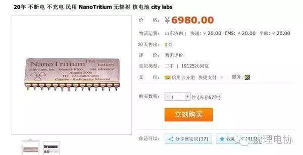
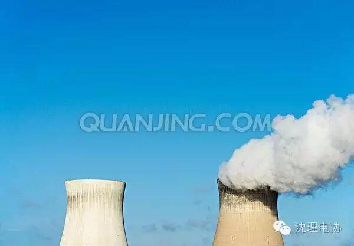
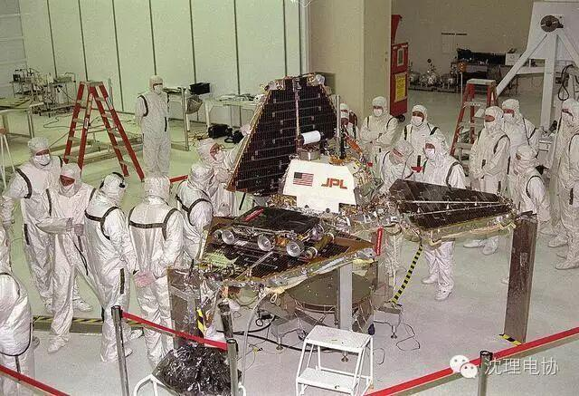
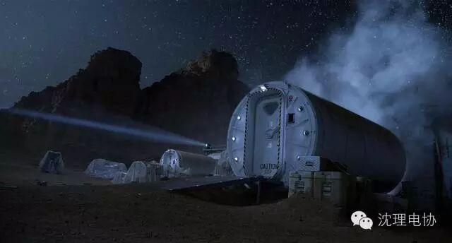
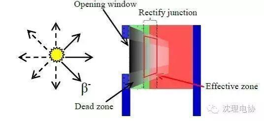
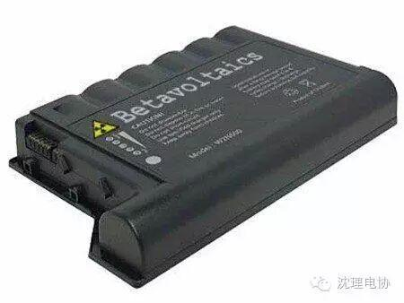

使用小程序
万能淘宝什么都有，这就是传说中的核电池，电池中的战斗机---欧也！

20年不断电？不不不，很多理论说法认为这种电池千年不断的，就是传说中的千岁，娘娘千岁千岁千千岁。
嗯，但是还没有实验证明这电池的准确放电时间，原因。。。你懂的啊
4
核电池？什么东西？？
核电，最先想到的肯定是这浓烟滚滚的大烟囱，嗯，烟囱？

人家并不不不是“烟囱”好吗？人家的名字，，，听好了，叫叫叫做“冷却水塔”！！！


不过这种核电池跟我们通常说的核电池以及好奇号火星车上携带的核电池是不同的。目前所有的核电站，都是采用重元素的裂变反应释放热量，再把热量转换成电能。而网上的这款NanoTritium电池与核电站的原理不同，属于放射性同位素电池，这类电池大致可分为两种，分别是热转换型核电池以及非热转换型电池。其中淘宝上说的这种属于非热转换型电池。这种电池使用同位素衰变时放出的β粒子，也就是直接用电子来发电， 中间不涉及使用热力来产生电力。NanoTritium这款核电池就是利用氢的同位素氚，它的原子核由一个质子和两个中子构成。这是一种元素会发生β衰变，放出高速移动的电子（即β射线），同时转变成氦3。这些高速电子射入半导体中就会产生电流。

由于氚的半衰期长达12.43年，因此这种电池可以在长时间内持续提供电池。但它产生的电流不大，如果真想让核电池为手机供电，那这电池的体积必定会大于手机本身。所以目前核电池只适于那些耗电较低但需要超长时间不间断供电的场合，比如内置医疗设备的供电，以及军事或者太空用途。
另外大家会担心的这核核电池会否对人体造成危害，其实这种核电池是相当安全的，因为氚的衰变只会产生高速电子，而这样的电子是没能力穿透人体的，采用低Z材料如铝等便能很好的屏蔽，因此它对人体来说是相当安全的，除非你把大量的氚给口服下去或者注入体内。
不过随着技术的发展说不定在不久的将来，我们真的只需要一个硬币大小的电池，就可以让你的手机不充电使用5000年。

编辑/高星华